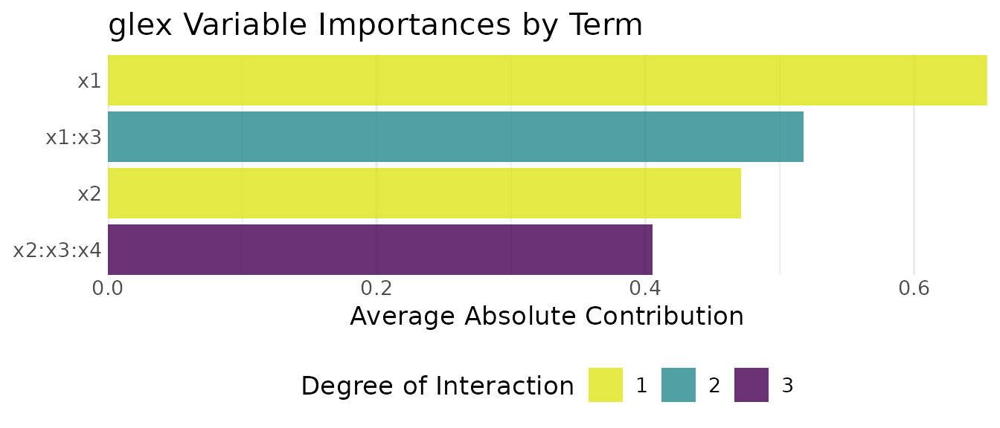
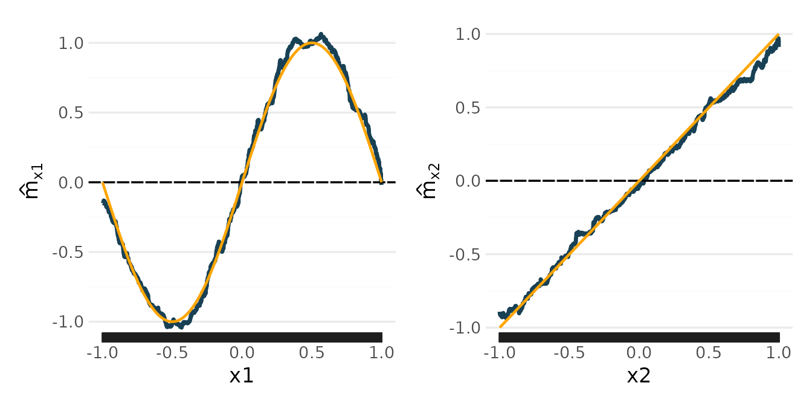
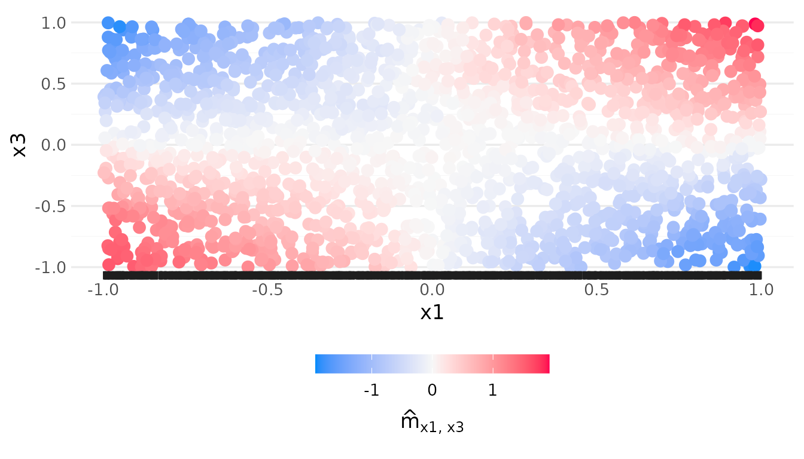

A model fitted by rpf() is a sum of a few functions, the
components, each of one, two or three predictors. This article shows how
to read them: from the printed summary, as numbers from
predict_components(), and as plots. It uses simulated data,
so that we can compare every component with the truth.
Data with known components
The outcome is a sum of four terms: two main effects, a two-way and a
three-way interaction. x5 has no effect.
set.seed(2)
n <- 2000
sim <- data.frame(
x1 = runif(n, -1, 1),
x2 = runif(n, -1, 1),
x3 = runif(n, -1, 1),
x4 = runif(n, -1, 1),
x5 = runif(n, -1, 1)
)
sim$y <- sin(pi * sim$x1) + sim$x2 + 2 * sim$x1 * sim$x3 +
3 * sim$x2 * sim$x3 * sim$x4 + rnorm(n, sd = 0.3)The predictors are independent and uniform on [-1, 1], so each term has mean zero, and the interactions have mean zero along each of their predictors. These are the conditions under which the four terms are exactly the components the model estimates (see “Purification” below).
model <- rpf(y ~ ., data = sim, nthreads = 2)The printed summary, line by line
model
#> ── Random Planted Forest model ─────────────────────────────────────────────────
#> Regression. Prediction = intercept + the sum of 4 components.
#> Intercept: -0.000602865
#>
#> Components (largest first), importance = share of the variance of the prediction on the training rows:
#> component importance
#> x1 31%
#> x1:x3 27%
#> x2:x3:x4 21%
#> x2 17%
#>
#> How it was chosen:
#> The forest: 200 tree families of 1,131 splits (chosen out of bag; growing stopped at 2,263).
#> From the forest's 25 nonzero components (purified): those with a share of at least 3% of the forest's Var(prediction), each with one coefficient, fitted out of bag (rule R).
#> Rule and threshold chosen by out-of-bag error (1-SE rule; 5 folds, seed 42370001) among 16 candidates.
#> Left out: 21 components, shares together 0.98% (largest x2:x3, 0.14%).
#> Components of three or more predictors in at most 10 heat maps each, then rule and threshold chosen again on these (R, tau = 3%; none left out).
#> Heat-map forms: x2:x3:x4: x3 in 10 intervals (98% of its variance)-
Regression. Prediction = intercept + the sum of 4 components.The kind of model, and how many components it has. The prediction for a row is exactly this sum. -
Intercept: the constant part, here close to the true value 0. -
The component table lists the components, largest
first. The importance of a component is its share of the variance of the
model’s prediction on the training rows (the column
model_shareofmodel$components). The shares need not add up to 100%: the components are not uncorrelated on the data. Here the model found the four true terms, and no other. -
How it was chosensummarises the three steps of the default call:-
The forest: how many tree families were grown, and how many splits each made. The number of splits was chosen out of bag while the forest grew, and growing stopped a little later, once more splits no longer helped. See The number of splits and further tuning. -
From the forest's ... nonzero components: the forest itself has many more components than the model. Pruning kept those with a share of at leasttauof the variance of the forest’s prediction, and with rule R refitted one coefficient per kept component. -
Rule and threshold chosen by out-of-bag error: the rule (D or R) andtauwere chosen out of bag, with the 1-SE rule, among 16 candidates. -
Left out: the components that were dropped, with their shares added up. Here they are small, and the true model has none of them. -
Components of three or more predictors in at most 10 heat maps eachandHeat-map forms: how the three-way component is shown (see “Components of three predictors” below).
-
Pruning to a sparse model explains the rules and the threshold.
The components as numbers
predict_components() evaluates every component of the
model at the rows of new_data:
comp <- predict_components(model, new_data = sim)
comp$intercept
#> [1] -0.0006028654
head(comp$m)
#> x1 x2 x1:x3 x2:x3:x4
#> <num> <num> <num> <num>
#> 1: -0.9043504 0.32576634 1.12321803 0.905755230
#> 2: 1.0126704 0.27128588 0.01722381 -0.066965148
#> 3: 0.4182107 0.62724757 0.23601553 -0.863369062
#> 4: -0.8676898 -0.08982006 0.34535513 -0.001244501
#> 5: 0.4260782 -0.68338066 -0.90147535 0.116490434
#> 6: 0.4323285 -0.33517326 -0.27196753 -0.018867534m has one column per component. Each column is that
component’s contribution to the prediction of the row, on the scale of
the outcome, and the intercept and the columns add up to the
prediction:
So a single prediction can be read as a sum. For the first row:
round(unlist(c(intercept = comp$intercept, comp$m[1, ])), 3)
#> intercept x1 x2 x1:x3 x2:x3:x4
#> -0.001 -0.904 0.326 1.123 0.906
predict(model, sim[1, ])
#> # A tibble: 1 × 1
#> .pred
#> <dbl>
#> 1 1.45predict_components() takes new data as
predict() does, and predictors restricts it to
the components of some predictors (the others are returned as one
remainder column, so that the sum still holds).
Importance
model$components has one row per component the model
considered:
model$components[, c("component", "order", "share", "kept", "beta", "model_share")]
#> component order share kept beta model_share
#> 1 x1 1 0.3646033 TRUE 1.0129657 0.3051278
#> 2 x2 1 0.2339653 TRUE 0.9571953 0.1748334
#> 3 x1:x3 2 0.3136775 TRUE 1.0190266 0.2656600
#> 4 x2:x3:x4 3 0.0642798 TRUE 2.0019192 0.2101065-
shareis the component’s share of the variance of the forest’s prediction, before pruning. It is what the thresholdtauis compared with. -
betais the coefficient rule R fitted to the component. -
model_shareis the share ofbetatimes the component in the model’s prediction: the importance thatprint()shows.
The forest shrinks interactions: it averages many tree families, and
some of them never find a given interaction. The refit of rule R
restores their size. Here it multiplies the three-way component by 2,
and the component’s importance is 21% of the model where its
share of the forest was 6%.
glex has another measure, the mean absolute contribution of each component over the rows:

The two measures need not give the same order. The variance weights large contributions more than the mean absolute value does, so a component that is large on a few rows, such as an interaction that is large only where all its predictors are far from 0, ranks higher by variance.
Plots with glex
predict_components() returns an object of class
glex, which the glex package draws with
plot(). A main effect is a curve; a two-way interaction is
a scatter of the data coloured by the component’s value.
Here the true main effects are added as orange lines:
truth <- data.frame(x = seq(-1, 1, length.out = 200))
add_truth <- function(p, f) {
p + geom_line(aes(x, y), data = transform(truth, y = f(x)), inherit.aes = FALSE,
colour = "orange", linewidth = 0.8)
}
add_truth(plot(comp, "x1"), function(x) sin(pi * x)) +
add_truth(plot(comp, "x2"), function(x) x)
The estimates follow the truth. Like any tree-based model, they are step functions, and they flatten towards the edges of the data, where few rows determine them.
The interaction x1:x3 should look like the product
2 x1 x3: positive where x1 and x3
have the same sign, negative where they differ.

Components of three predictors
A component of three predictors cannot be drawn as one picture. It is
shown as heat maps over two of its predictors, one heat map per interval
of the third. A forest’s own three-way component can need hundreds of
such heat maps, one for each pair of neighbouring cut points of the
third predictor. So by default (max_panels = 10), a kept
component that needs more than 10 is coarsened: the third predictor is
cut into at most 10 intervals, the component is averaged within each,
and the model is pruned again with the coarsened component in place.
Predictions use the coarsened component, so the model that is printed
and plotted is the model that predicts.
model$components records the form of each component:
model$components[, c("component", "form", "heat_maps")]
#> component form heat_maps
#> 1 x1 full 1
#> 2 x2 full 1
#> 3 x1:x3 full 1
#> 4 x2:x3:x4 coarsened 10and model$display$coarse the details of each coarsened
one:
shown <- model$display$coarse[["x2:x3:x4"]]
shown$C # the predictor cut into intervals
#> [1] "x3"
shown$cuts # its cut points
#> $x3
#> [1] -0.81034462 -0.60025293 -0.39393299 -0.18737303 0.02874594 0.24226904
#> [7] 0.41560853 0.60707442 0.81590334
shown$var_kept # share of the component's variance the coarsened form keeps
#> [1] 0.9816374The coarsened component keeps 98% of the variance of the forest’s
component. Each of its heat maps is over the two other predictors,
setdiff(shown$S, shown$C), for the rows whose
x3 lies in one interval.
The installed glex (version 0.7.0.9000) does not yet draw components of three continuous predictors, so this article does not plot them.
max_panels = Inf keeps every component as the forest has
it, and the Pruning article says more about
how the coarsening is chosen.
Purification
The trees of a forest do not by themselves give unique components. A
main effect of x1 can sit in trees on x1 alone
or in trees on x1 together with other predictors.
Purification moves every part of the forest’s prediction to the
lowest-order component it belongs to, without changing the
prediction.
The components are identified by the training data: for every
component, its average over the training rows along any one of its
predictors is zero, for any value of its other predictors (the marginal
identification of Hiabu, Meyer and Wright, 2023; see
?purify). The intercept is the mean prediction on the
training rows.
rpf() purifies the forest while pruning; the pruned
model stores its kept components, so you do not need to call
purify() (and it holds no forest to purify unless fitted
with keep_forest = TRUE). For a forest fitted with
prune = FALSE, predict_components() purifies
it on first use. How the forest is grown
shows what purification does to the trees of one family.